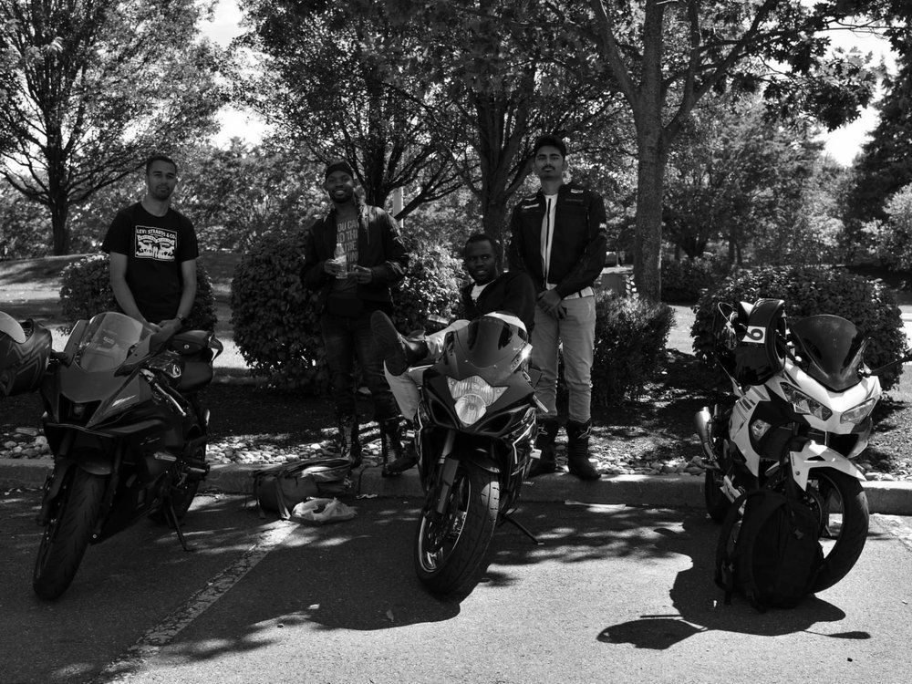

Solving Complex Real World Problems using Data Science & Finance Techniques.
I'm Abhi — a data science major at Penn State with a minor in finance, working toward roles in consulting, banking, and data-driven business analytics. Before college I spent three years running the books and operations of an independent pharmacy, so I got used to numbers that had real consequences attached. Now I'm a project manager at Given Voice, leading a team of 8 engineers building a wearable assistive communication device, and I lead a student team applying machine learning to real customer data.
Three projects I keep coming back to
EMG-based sentence decoding for TBI survivors and quadriplegics
Working with Given Voice on Beyond Eye Gaze — an AAC system that reads faint muscle signals from people with paralysis or quadriplegia and turns them into sentences. My job is to figure out where the model actually works and where it quietly fails, and to make that answer reproducible by someone who isn't me.
I built and documented the GCP data pipeline behind the research, wrote a data-collection protocol designed for handoff, and characterized decoding performance across sessions. The work is going into a poster submission for ACM ASSETS 2026.
- Built + documented a GCP research data pipeline
- Characterized model behavior: what works, what doesn't, why
- Authored a handoff-ready data collection protocol
- Contributing to an ACM ASSETS 2026 poster submission
Formula 1 season tracker
A shipped web app that reconstructs a full F1 season — race-by-race results, driver and constructor standings as they moved, and the moments the championship actually turned. I race motorcycles as an amateur, so this started as a way to settle arguments and turned into a lesson in modeling event data that arrives in a strict order.
The interesting part wasn't the charts, it was the schema: one clean model of races, entries, and points that makes every standings view a query instead of a special case.
- Designed the race / entry / points data model
- Built standings that recompute at any point in the season
- Shipped and deployed it publicly
Database solutions for Penn State student affairs
Leading a team in Data Management for Data Sciences: we take real datasets, decide which data model and database actually fits the problem, and then build the thing. Our software works interactively against Penn State student-affairs systems. Most of the job is disagreeing productively about schemas before anyone writes code.
- Led the team through model + database selection
- Applied ML methods to real customer data
- Built interactive database management software
Where I've worked
Given Voice
- Leading a cross-functional team of 8 engineers through a 15-week capstone delivering a wearable AAC device for individuals with paralysis and traumatic brain injury
- Authored the proposal and set technical direction, shifting the architecture to a piezoelectric wearable with IMU and EMG
- Serving as PI proxy on a human-subjects research protocol, managing research compliance and data governance
- Built the onboarding path for the engineering team across hardware, firmware, and the Python ML pipeline
Given Voice
- Led development of assistive communication (AAC) technology for people with physical disabilities
- Built and documented a Google Cloud Platform data pipeline for research infrastructure
- Authored a data collection protocol built for handoff and long-term reproducibility
- Characterized the Beyond Eye Gaze communication model, contributing to an ACM ASSETS 2026 poster
Penn State IST
- Managed a team applying machine learning to real customer data
- Evaluated large-data problems and selected fitting data models and databases
- Constructed database management software working against PSU student-affairs systems
New Castle Pharmacy
- Oversaw the books for a $3M business, focused on growth and new patient acquisition
- Grew revenue ~16% through outreach programs in underserved markets
- Launched community COVID-19 screening protocols — 2,000 tests administered
- Supported 3 lead pharmacists with prescription and vaccination duties
What I work with
Analysis
- Python · pandas
- SQL & data modeling
- R
- AI & machine learning
- Statistics & experiment design
Engineering
- Google Cloud Platform & AWS
- Data pipelines
- Git / GitHub & GitLab
- JavaScript & web deploys
Finance & Business
- Bloomberg Market Concepts
- Financial statement analysis
- Structured consulting frameworks
- Client communication
Also
- Telugu & Hindi (fluent)
- Technical documentation
- Budget ownership
- Amateur motorcycle racing
Academic background
The Pennsylvania State University
- Bloomberg Market Concepts
Bloomberg Institute - Consultant Practical Training Program
Case simulations & consulting frameworks
Leadership & involvement
International Club at Penn State
- Managed a $10,000 budget, winning best event two years running among all campus clubs
- Planned and executed multicultural events with 300+ members in attendance
- Served as primary liaison between club leadership and university staff
Consultant Training Program
- Applied consulting frameworks across case simulations for mock clients
- Delivered client-focused recommendations through structured needs assessments
- Facilitated problem-solving sessions on business analysis and client communication
Amateur Motorcycle Racing
Track days and group rides on sportbikes are where the F1 season tracker actually started — enough arguments with this crew over whether Sebastian Vettel was the greatest of all time that I ended up building a database to settle it.

Let's talk.
Open to internship and full-time roles in consulting, banking, and data / business analytics. I'm quick to respond and always glad to talk through a project.
- Emailabhiadusumilli2005@gmail.com
- Phone(302) 437-9966
- LinkedInlinkedin.com/in/abhiadusumilli
- GitHubgithub.com/Abhi-PSU